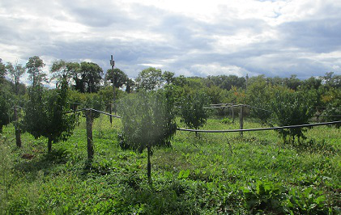
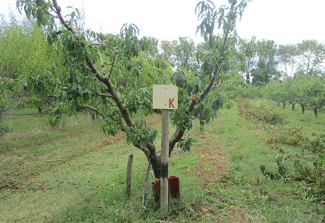
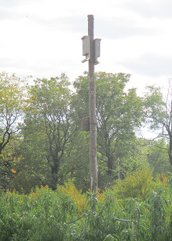
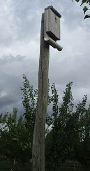
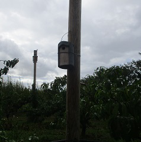
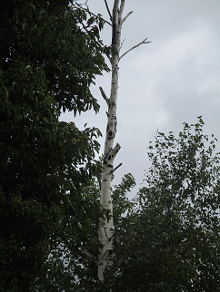
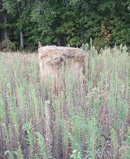
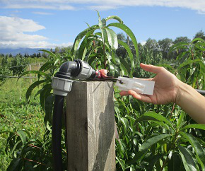
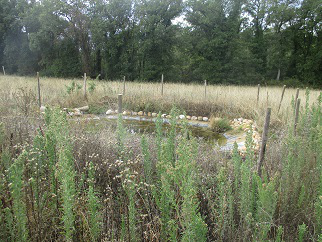

Retour de la sortie à l'INRA du mercredi 2 octobre 2019
Par Arthus Jullien de Pommerol et Jean-Baptiste Onfray
Armand Guillermin nous a présenté un essai de pêchers

L'essai de pêchers présenté
Nous avons visité un essai de pêchers cultivés avec des engrais bio où sont faits des tests de la résistance à certaines maladies et de la qualité du sol. Les pêchers sont directement plantés dans l'engrais contrairement à l'engrais d'habit (engrais mis après la plantation). Cet essai à été lancé il y a trois ans.
Les arbres sont plantés en haies ; chacun a un numéro. Il y a plusieurs variétés de pêchers sur lesquelles on regarde la tolérance à certaines maladies sans traitement (champignons). En effet, certaines sont plus résistantes, d'autres moins.

La numérotation des rangées
Les auxiliaires.
Pour améliorer la qualité des fruits et réduire au maximum les maladies, l'exploitation utilise de nombreux auxiliaires(qui vont réduire les ravageurs) attirés par des IAE (Infrastructure Agro-Ecologique). Le but est donc de favoriser au maximum la biodiversité.
Les premiers IAE que l'on peut remarquer sont les perchoirs pour les rapaces qui sont là pour permettre aux rapaces de se poser et de chasser les campagnols. En effet, ceux-ci sont très efficaces pour manger les campagnols; on dit que le rapace est l'auxiliaire du campagnol. Les campagnols (des petites souris) sont dangereux pour les arbres car ils peuvent manger les racines et donc tuer les arbres. Grâce aux perchoirs, les rapaces vont augmenter l'efficacité de leur chasse et vont donc rester.

Un perchoir pour les rapaces

Un perchoir pour les chauve-souris
Il y a aussi des perchoirs pour les chauve-souris (qui y dorment la journée). Celles-ci mangent les insectes comme les pucerons ou les tordeuses (des papillons qui se développent dans les arbres). D'autres insectivores sont les mésanges. Il y a donc des nichoirs pour les mésanges. C'est un oiseau très intéressant car il fait des nids et lorsqu'il a des petits il a besoin de beaucoup de nourriture. Il va donc aller chercher sa nourriture et va manger les chenilles (tordeuses) et les insectes ravageurs.

Un nichoir pour les mésanges

Un arbre creux
Les haies qui bordent les vergers sont également utiles à la biodiversité ; les essences de bois plantés ont été choisis de façon à favoriser les auxiliaires. Elles servent de perchoir aux rapaces, abritent des insectes qui vont se nourrir d'autres insectes comme les araignées ou les foricules (pince-oreilles). Ces haies créent aussi un corridor qui va servir à de nombreux auxiliaires pour se déplacer sans se faire voir. Dans ces haies il y a aussi des troncs d'arbres creux où peuvent nicher les chauves-souris et les chouettes.
Des bottes de pailles ont aussi été installées au bord des vergers. Celles-ci servent à attirer les serpents (qui mangent les souris et les campagnols et rentrent dans les galeries), les hérissons (qui mangent les limaces), et aussi la belette (un petit mammifère très fin qui va aller manger les campagnols directement dans les galeries).

Une botte de paille

Une pastille de phéromones
Une autre méthode utilisée est la confusion sexuelle: des pastilles de phéromones sont placées sur des poteaux; elles attirent les papillons mâles. Ceux-ci se perdent et ne peuvent se reproduire.

Une mare
Des mares et des bacs d'eau ont aussi été créés pour attirer les bactraciens, les libellules, les grenouilles, les oiseaux, les insectes. Comme nous l'a dit Armand Guillermin lui-même C'est tout c**, mais ça sert. Des appareils photo sont placés à côté pour voir les différentes espèces et les dénombrer.